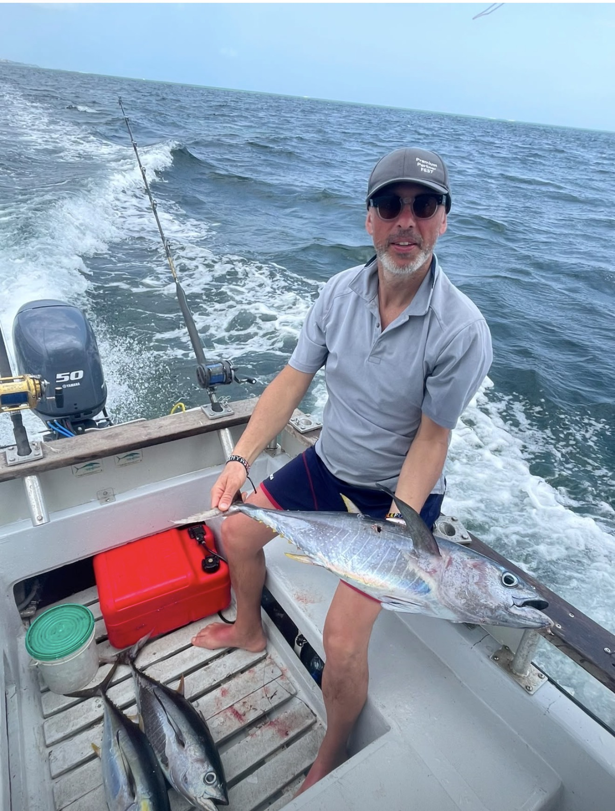
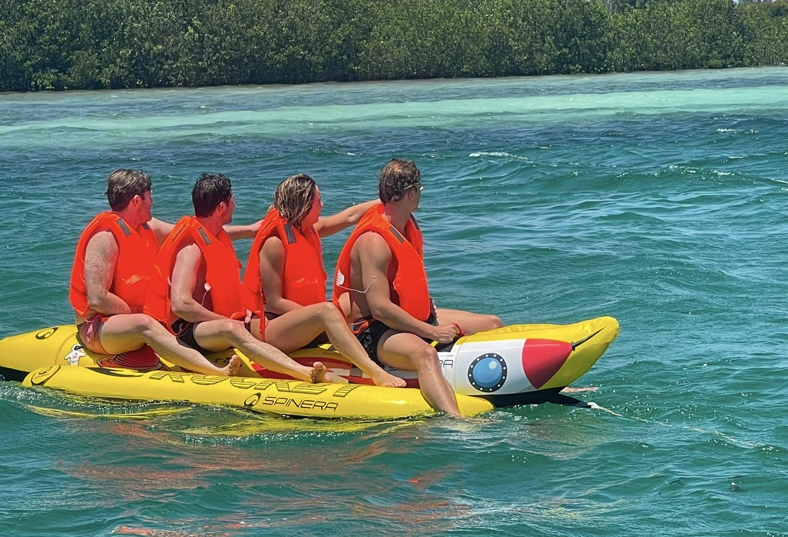
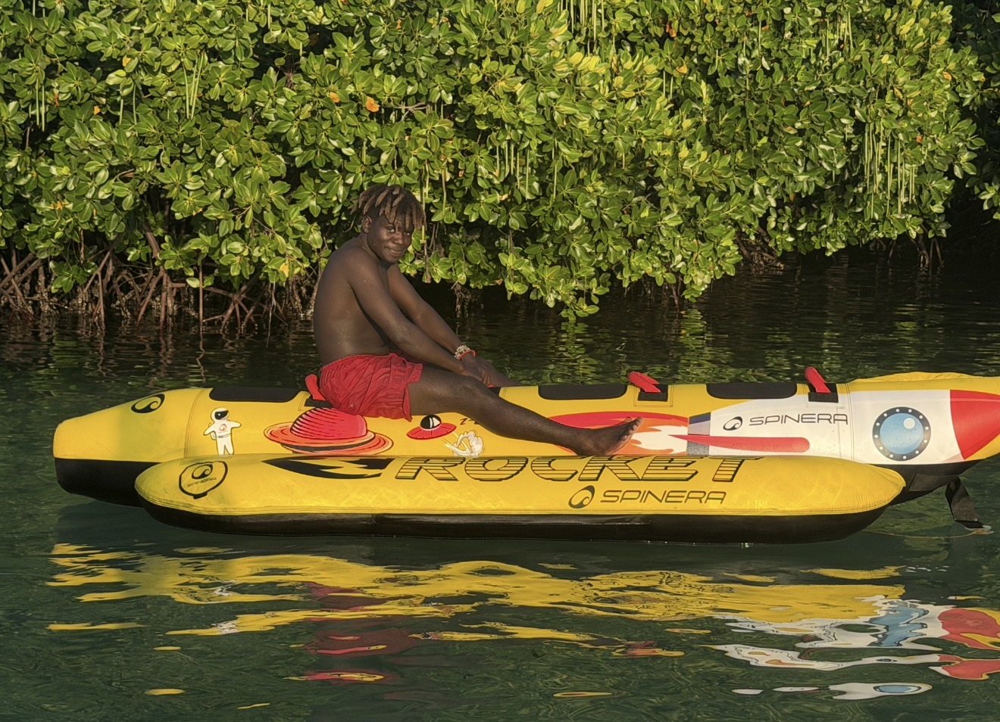
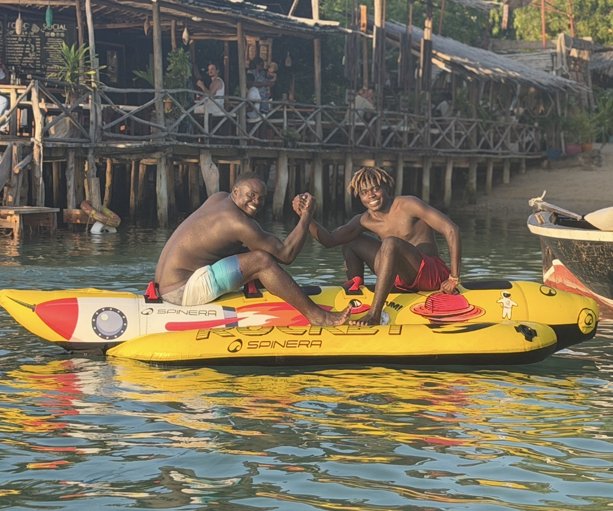
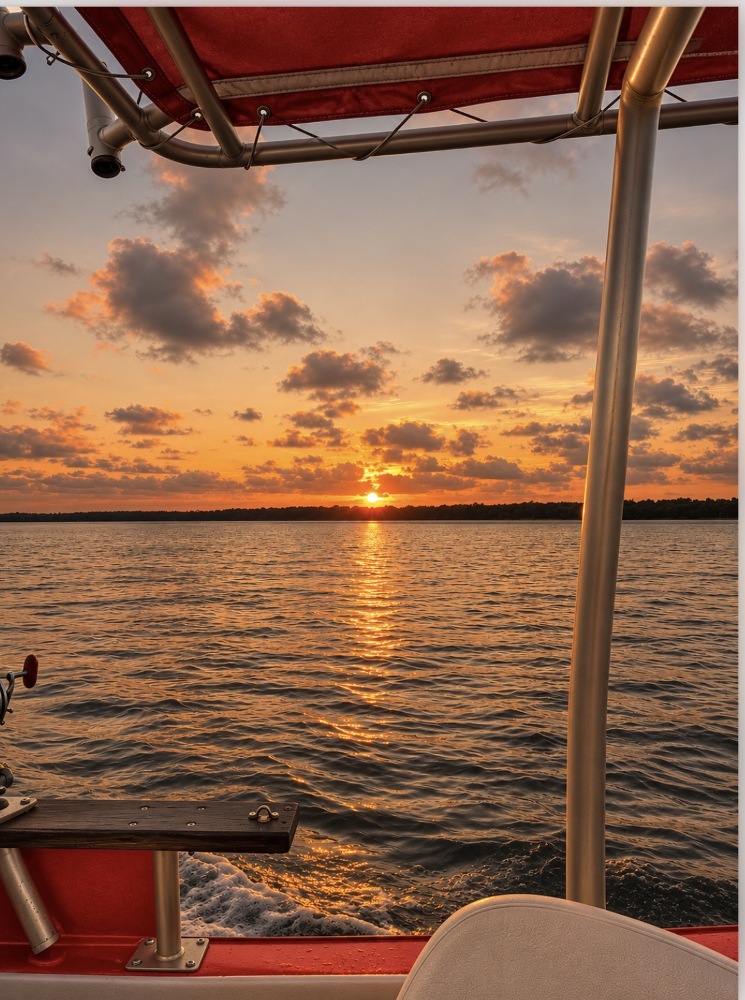

Snorkeling incluso
Blue Safari
Sali a bordo della Subira, osserva i fondali attraverso il fondo trasparente e goditi lo snorkeling, già incluso nell'escursione quando il mare lo permette.
Preventivo su richiesta
Il mare di Watamu ha mille sfumature. Scoprile con Juma: tra coralli, acque turchesi e momenti da vivere al tuo ritmo.
Vivi Watamu con Juma: Blue Safari con snorkeling, pesca d'altura, sport acquatici e tramonto in barca a Mida Creek.
Sali a bordo della Subira, osserva i fondali attraverso il fondo trasparente e goditi lo snorkeling, già incluso nell'escursione quando il mare lo permette.
Sali a bordo della barca privata di Juma per un'esperienza unica, pensata su misura per te.


Spingiti oltre la costa e scopri il fascino della pesca d'altura con Juma. Itinerario, attrezzatura e durata sono da concordare prima dell'uscita.



Dai energia alla tua vacanza con gli sport acquatici: kitesurf, SUP o kayak sono alcune possibilità da verificare con Juma, in base a condizioni e disponibilità.


Scopri con Juma la bellezza di Mida Creek al tramonto: una tranquilla uscita in barca tra le mangrovie, i riflessi dorati sull'acqua e la luce della sera. Percorso e orario dipendono dalla marea e dalle condizioni del tempo.
Tocca una foto per aprire la galleria ingrandita e sfogliare immagini e video.
Le uscite si concordano con Juma in base a meteo, mare, disponibilità e norme locali. Lo snorkeling fa parte dell'esperienza glass boat; le catture durante la pesca non sono garantite.
Scopri un percorso possibile per ciascuna esperienza: soste, attività e orari vengono concordati con Juma.
 FOTO AUTENTICHE · WATAMU
FOTO AUTENTICHE · WATAMUITINERARIO INDICATIVO
Il percorso è un esempio: disponibilità, mare, maree, durata e servizi inclusi vanno confermati con Juma. Gli avvistamenti di animali non sono garantiti.
Personalizza questa esperienzaOgni uscita è diversa, proprio come chi sale a bordo. Con Juma, Watamu si scopre tra acque turchesi, fondali da osservare e piccoli momenti da ricordare.
Sogni lo snorkeling sul reef, un giro sulla Subira, la pesca d'altura o il divertimento degli sport acquatici? Racconta a Juma le tue idee e scopri cosa è possibile organizzare, secondo le condizioni del mare e le disponibilità.
Scrivi a Juma e organizza l'uscitaUn Blue Safari sulla Subira, una giornata di pesca d'altura o sport acquatici? Racconta a Juma cosa ti piacerebbe vivere: potrete concordare attività, disponibilità e prezzo direttamente su WhatsApp. Nessun pagamento online.
Parla direttamente con Juma
+254 741 457 022 Invia messaggio WhatsAppChiedi informazioni su prezzi, disponibilità ed escursioni. Nessuna prenotazione o pagamento automatico sul sito.
Compila i campi per aprire WhatsApp con Juma come destinatario e la richiesta già pronta. Puoi anche copiare il messaggio.
Scegli ciò che ti piacerebbe vivere e invia una richiesta personalizzata a Juma. Nessun prezzo o servizio viene confermato automaticamente.


Watamu ospita un parco marino protetto con barriere coralline, pesci tropicali e tartarughe marine. Esplorarlo significa anche rispettarlo: non toccare i coralli, non inseguire gli animali e seguire le indicazioni delle guide e del Kenya Wildlife Service.
L'ingresso al parco è regolato dal Kenya Wildlife Service: eventuali tariffe e modalità di pagamento vanno verificate sul sito ufficiale prima della visita.
Informazioni ufficiali KWS ↗
Scegli ciò che ti incuriosisce oppure racconta a Juma l'esperienza che sogni di vivere.
Indica la data, i partecipanti e il tuo livello in acqua. Prepareremo un messaggio da inviare direttamente a Juma.
Juma potrà confermare direttamente disponibilità, itinerario, attrezzatura, condizioni di sicurezza e prezzo.
La sicurezza dipende dall'itinerario, dalle condizioni del mare e dalle capacità personali. Comunica sempre il tuo livello al futuro operatore prima di prenotare e segui le sue istruzioni.
No. Le tartarughe abitano queste acque, ma ogni avvistamento è naturale e non può essere garantito. Mai toccarle né inseguirle.
Dipende dall'operatore e dal pacchetto. Verifica sempre cosa comprende il preventivo e controlla le tariffe ufficiali KWS.
Puoi scrivere direttamente a Juma su WhatsApp per verificare disponibilità e prezzi. Il sito non conferma prenotazioni né accetta pagamenti.